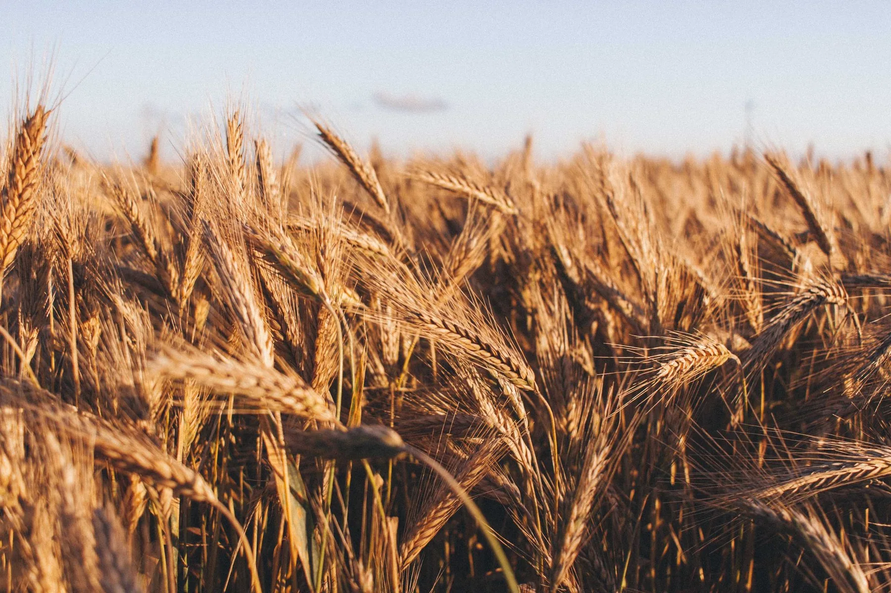
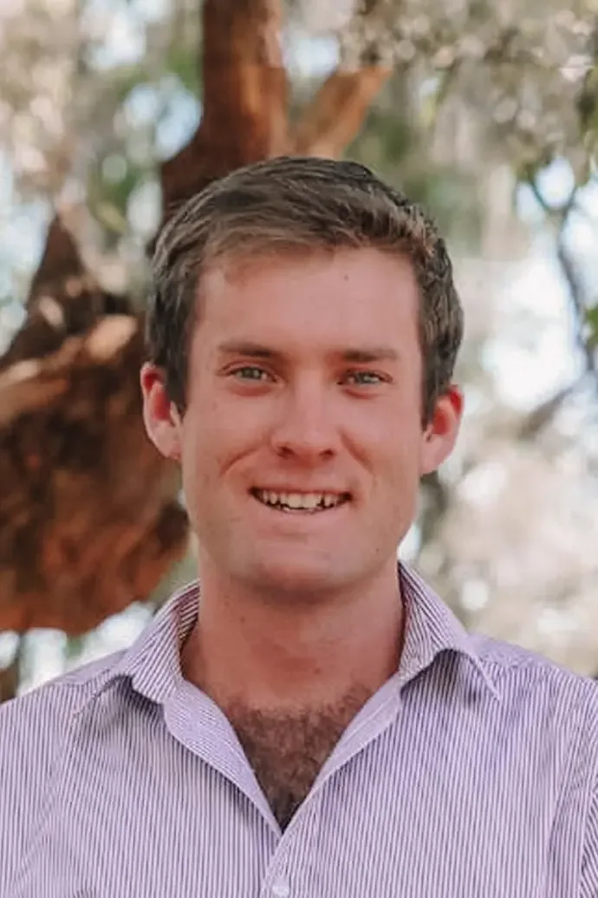
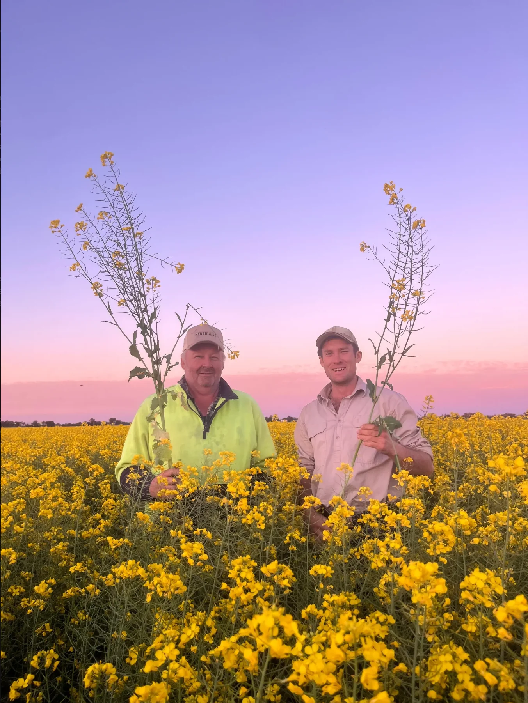
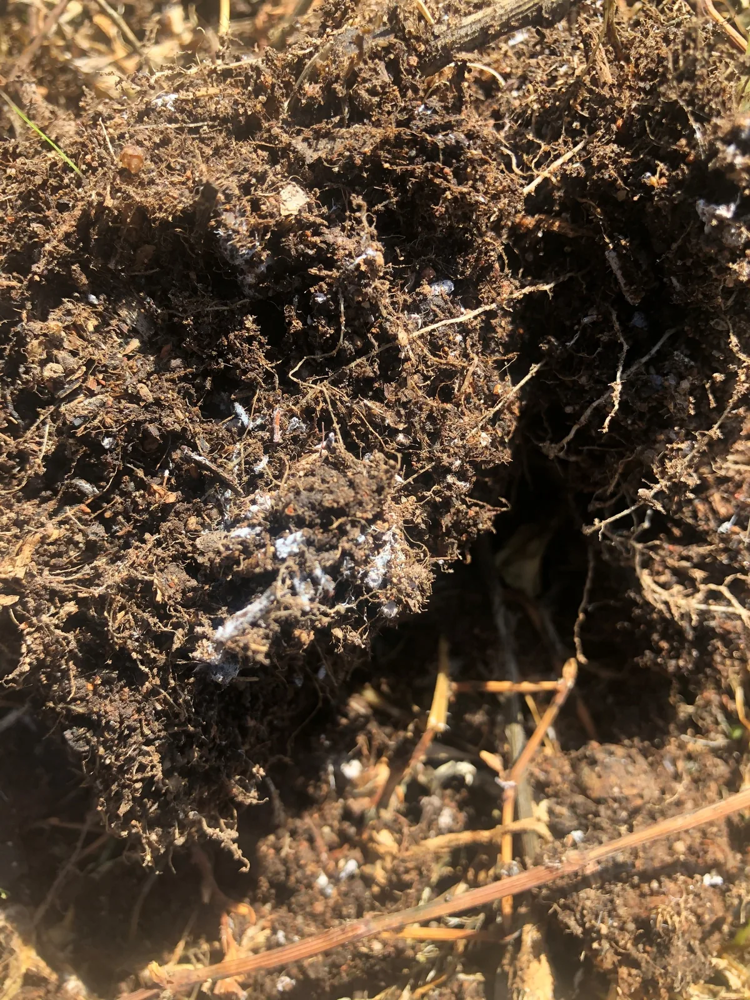
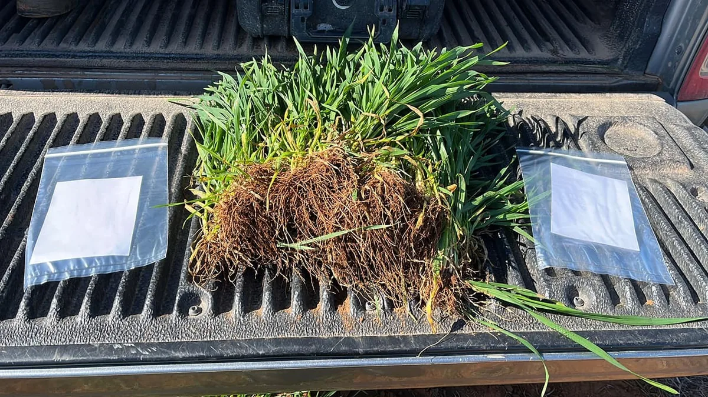

James White
James White is a nutritional agronomist working with broadacre growers in the North East. His experience includes livestock and cropping systems, with an interest in soil and pasture health.

Experience with cropping and livestock.
Known to many growers as Jimmy, James works with livestock and cropping farms. He considers the needs of the farm business alongside soil condition and crop production.
Nutrition advice for grain, oilseed and pasture, based on soil and plant testing and observations in the paddock.

Work on the farm, and further afield.
James’s agronomy work includes fertiliser planning and longer-term rotations, but farming is an interest outside work too. He enjoys time on a tractor and working with stock. He has also travelled through growing regions in Italy, France, the Netherlands, Switzerland and the UK to see how farming differs from place to place.
He is a member of the Riverina Ag Network and has taken part in the Marcus Oldham Rural Leadership Program, spending a week with people from across Australian agriculture discussing leadership and how they work with others.
James has also helped a student experience agronomy on farm. During his Horizon Scholarship placement, Marcus Attard spent days soil sampling with James and fellow Hybrid-Ag agronomist Alex Grant. Marcus described the time in the paddock as a chance to ask questions and learn about production systems across the Riverina.
James White · North East VIC
Useful places to start.

Choosing the right test
Understand what each test measures and when it may be useful.
Read
Position. Pattern. Plan.
Use current and previous results to discuss what to do next.
Read
Make every sample a useful reference.
Keep the original report and sample details together as a useful reference for future crop nutrition decisions.
ReadDiscuss your paddock nutrition with James.
Send your test results or get in touch with a question about your crop.